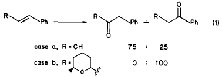

(Quoted from page 3476:) Interestingly, very little has been reported on the Wacker oxidation of disubstituted olefins13. Its use
in organic synthesis has been mainly limited to conversion of monosubstituted olefins into methyl ketones14.
The regioselectivity observed in our case, namely exclusive oxidation of the benzylic rather than the
homobenzylic carbon, is fortunately the desired one. Nevertheless, this situation is quite surprising on
grounds of the known stereochemical course15 and expected regioselectivity of the Wacker process. It has been
demonstrated both theoretically16a and experimentally16b that a nucleophile approaching a coordinated olefin
from the face oppite to the metal is expected to attack the carbon that is substituted by an electron-donating
group (or the position remote from an electron-withdrawing substituent). This tendency has been demonstrated
in the Wacker oxidation of indene to β-indanone17a and of para-substituted styrenes to acetophenone and
phenylacetaldehydes17b.

Indeed, we also found this prediction to be valid in the case of a Wacker oxidation of a model substrate, β-methylstyrene,
which yielded phenylacetone and propiophenone in a 3:1 ratio (case a in eq 1). However, when
this oxidation was repeated with β-tetrahydropyranyl styrenes (case b in eq 1),
we observed the opposite regioselectivity, leading to the phenyl ketones exclusively.
Experimental
Wacker Oxidation of β-Methylstyrene
β-Methylstyrene (107 mg, 0.9 mmol), cuprous chloride (82 mg), and PdCl2 (15 mg, 0.08 mmol)
were mixed with DMF (1 mL) and H2O (1 mL). The mixture was stirred under
oxygen atmosphere for 16 h and then extracted with pentane. The solvent was removed under reduced pressure to
give phenylacetone and propiophenone (together 115 mg, 95%) at a 3:1 ratio, as determined by 1H-NMR.
References
 [13] Tsuji, J. Organic Synthesis with Palladium Compounds; Springer: New York, 1980; pp 6-12.
[13] Tsuji, J. Organic Synthesis with Palladium Compounds; Springer: New York, 1980; pp 6-12.
[14a] J. Top. Curr. Chem. 91, 29 (1980)
[14b] Isr. J. Chem. 24, 153 (1984)
[15a] Tetrahedron 40, 2415 (1984)
[15b] Acc. Chem. Res. 16, 335 (1983)
[16a] J. Am. Chem. Soc. 103, 4308 (1981)
[16b] J. Am. Chem. Soc. 103, 7361 (1981)
[17a] Izv. Akad. Nauk SSSR 700 (1970)
[17b] Bull. Chem. Soc. Jpn. 41, 1395 (1968)
[17c] Tetrahedron Lett. 1225 (1971)
[17c] Organometallics 4, 1286 (1985)